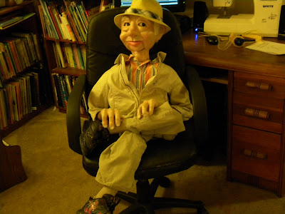
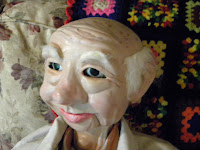
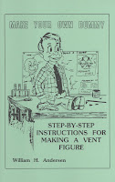

Self-made man
12/28/2009
{kind=link}

{kind=link}

From Michael Richards:As promised, here are photos of the ventriloquist figure I made using Bill Andersen's book. The figure is sculpted with plastic wood, using Apoxie Sculpt for final details. He is a full sized, 40" pro figure with slot jaw mouth and side to side moving eyes.
* * * * * *
From Clinton: Great job, Michael. And such strong character expression. Well done. Thank you for sharing your photos. To those of you reading this, the book Michael is referring to is Make Your Own Dummy by William Andersen. I do have this book in stock. $6.00
{kind=link}

postpaid.* * * * * *
From Michael: Hello, everybody. I agree that the plastic wood currently on the market isn't very good, but I found I could get it to act more like clay by adding some white flour into it. I didn't have access to any fine sawdust, since I live in an apartment, and don't have a studio. Flour worked great.
I tried all the wood fillers on the market, and the one I like best is Elmer's Carptenter's Wood Filler. Mixed with some flour, it works great. When working, I would just add flour until the stuff was the right consistency. To keep it from drying too fast, just add a little bit of water while you work. I kept a cup of water beside me at the table, and I would dip my fingers into it and work the water into the sculpture.
Also, I didn't use molds. I first used paper mache over a balloon to get a hollow head. Once dry, I put the plastic wood over that. As I said, I used Apoxie Sculpt (similar to Magic Sculpt), which is an epoxy clay, for finer details. Although, I would not do this again, because epoxy is really hard to sand. Also it's pretty heavy.
I'm making a figure now out of paper clay. I recently met a professional and well-known sculptor named Bill Nelson. He makes vent figures and dolls for celebrities and such. And he uses paper clay. I tried it, and the stuff is amazing. It's very easy to work with, can be kept workable with water for as long as you need, and dries in less than 24 hours. When it dries, it's rock hard, but sands like a dream. I found you can still use Mr. Andersen's book. You just replace the usage of plastic wood with paper clay. I wish I'd known about paper clay ages ago!
Incidentally, I didn't use anyone to pose for my old man figure. I actually changed the face three times as I sculpted, deciding on an old man at the very end. I used pictures of my own grandfather when sculpting the wrinkles and making the age spots.Thanks for all the wonderful comments! -Michael Richards